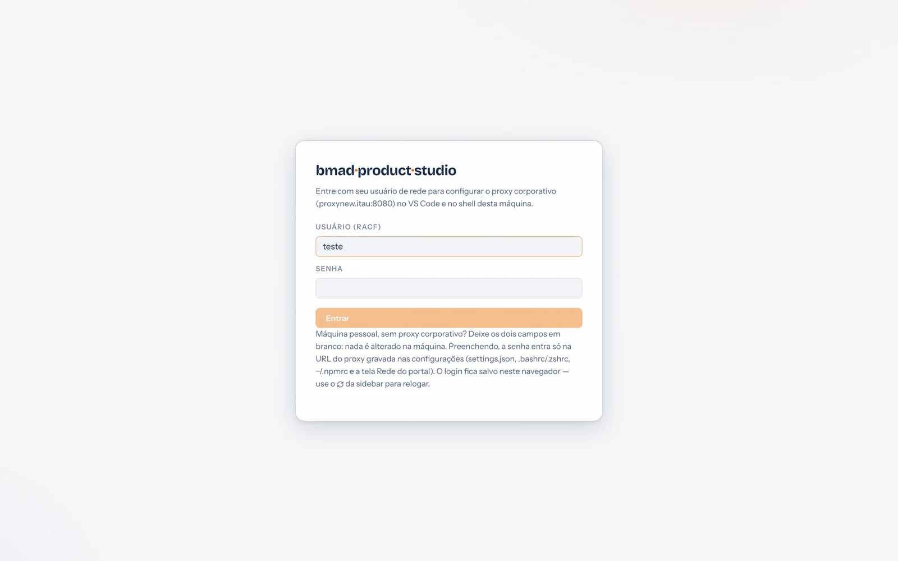
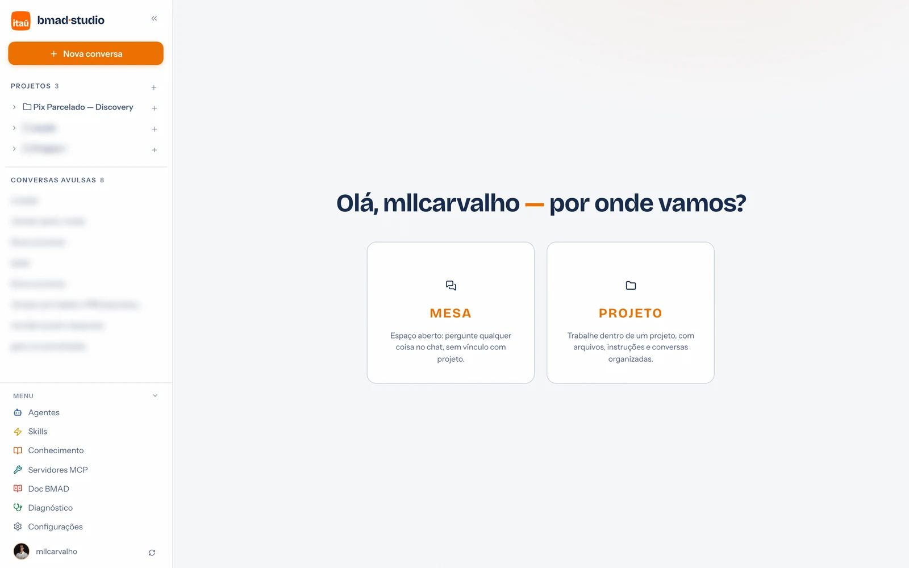

Guia de uso · 01
Primeiro acesso
O portal abre no navegador, mas quem o mantém vivo é o VS Code — a extensão é o servidor. Este é o caminho da primeira vez: entrar, autorizar o Copilot e escolher por onde começar.
1 · Login
Com o portal instalado, o navegador abre na tela de entrada:

- Rede corporativa: informe usuário RACF e senha. O portal monta a URL do proxy e grava nos lugares certos (settings.json do VS Code, rc do shell, ~/.npmrc) — é o mesmo efeito do bootstrap da instalação, sem terminal.
- Máquina pessoal: deixe os dois campos em branco e clique em Entrar — nada é alterado na máquina.
- Senha RACF trocou? Use o ícone 🗘 ao lado do seu usuário, no rodapé da sidebar, para relogar com a senha nova.
O login fica salvo no navegador — nas próximas vezes você cai direto na tela inicial.
2 · Autorizar o Copilot (uma vez só)
Na primeira mensagem da primeira conversa, o VS Code mostra uma notificação pedindo permissão para o portal usar os modelos do Copilot. Clique na janela do VS Code e aceite — sem isso a resposta não vem. Não apareceu nada? A notificação pode estar atrás de outras janelas; traga o VS Code para frente.
3 · MESA ou PROJETO?

- MESA — uma conversa avulsa, sem vínculo com projeto. Perfeita para dúvidas, resumos e experimentos. Ela ganha um workspace próprio no disco se você usar arquivos.
- PROJETO — o modo de trabalhar de verdade: arquivos numa pasta real, instruções permanentes e conversas agrupadas. Detalhes em Projetos.
O tour de 30 segundos pela sidebar
- + Nova conversa — começa uma conversa avulsa; o + ao lado de um projeto cria a conversa dentro dele.
- Filtrar conversas — busca por título em tudo.
- Projetos e Conversas avulsas — clique para abrir; botão direito/× para renomear ou excluir.
- Menu (rodapé) — Agentes, Skills, Conhecimento, Servidores MCP, Doc BMAD, Diagnóstico e Configurações.
- « — recolhe a sidebar para um trilho compacto.
O portal vive enquanto houver uma janela do VS Code aberta. Fechou tudo?
Rode o comando de instalação de novo (instantâneo) ou, no VS Code,
Ctrl/Cmd+Shift+P → "BMAD Product Studio: Abrir no Navegador".